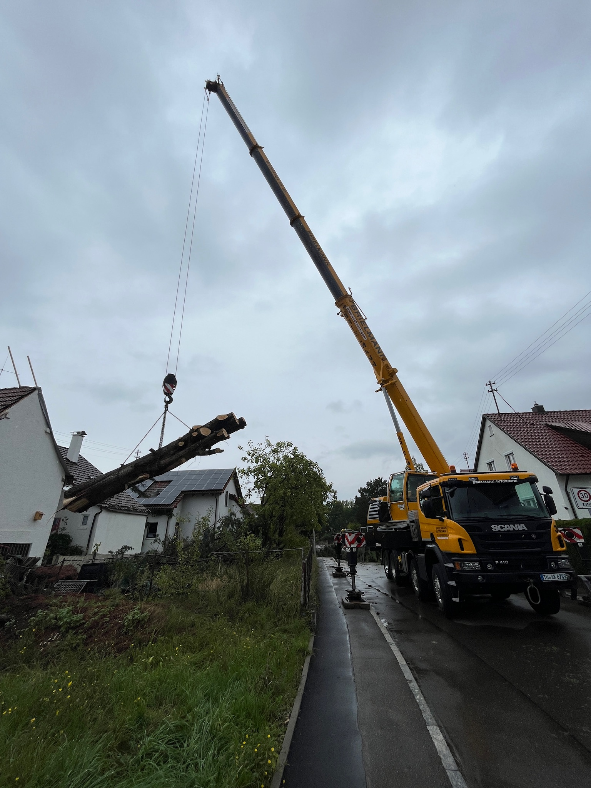
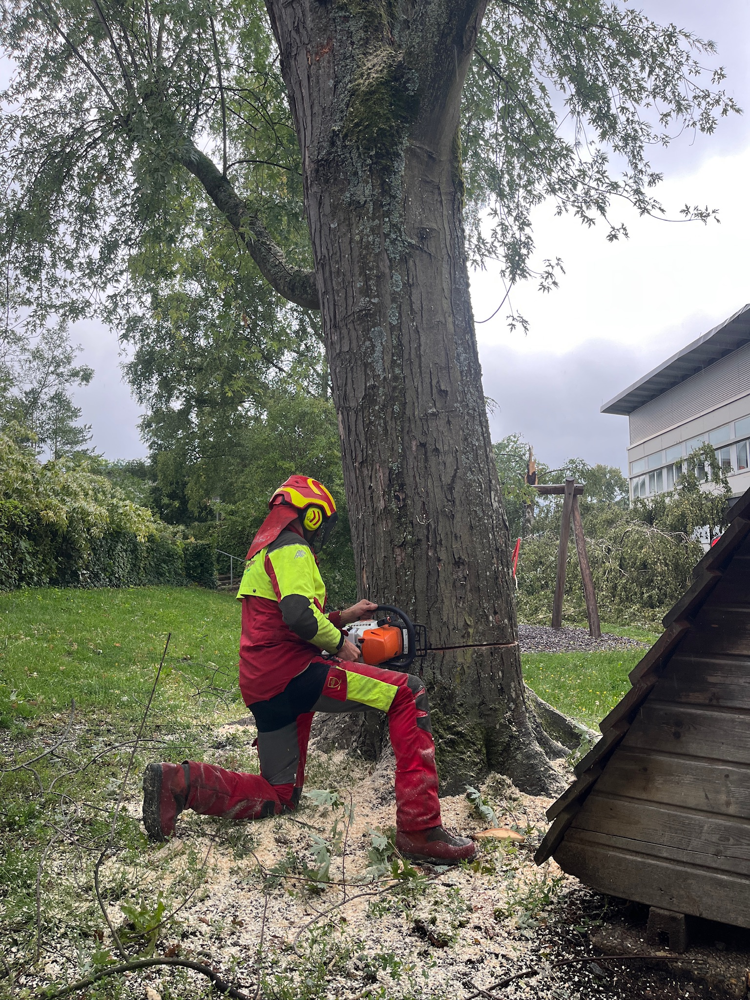
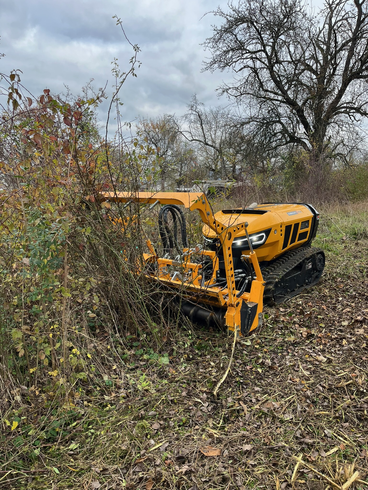
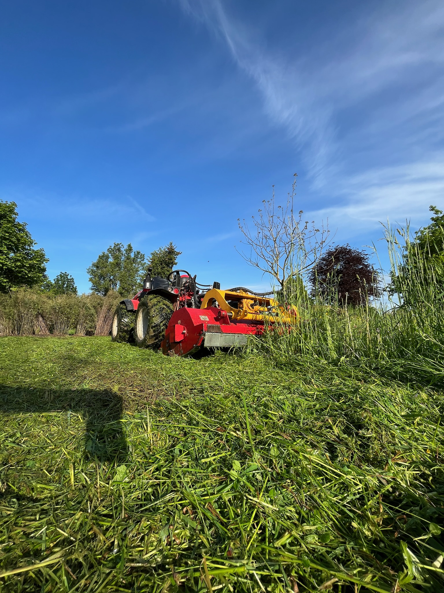
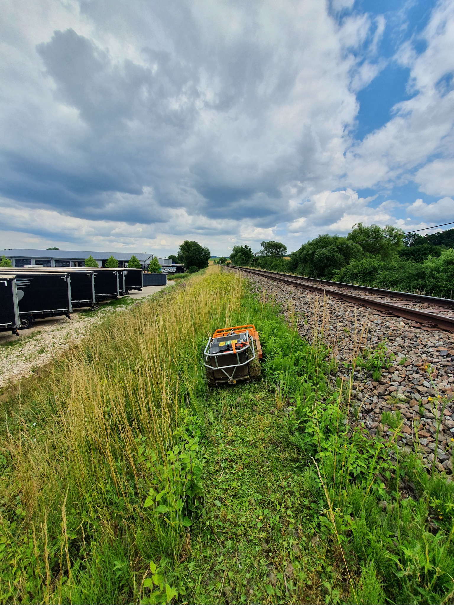

Leistungen
Ein Ansprechpartner für Forst, Garten und Landschaft – von der Problembaumfällung bis zum kompletten Landschaftsbau.
Baumarbeiten
Ob Baumfällung, Baumschnitt oder Rodung
Wir bringen jeden Baum sicher zu Fall und sorgen für einen professionellen, schonenden Baumschnitt. Außerdem roden wir Ihre Fläche, um neue Gestaltungsmöglichkeiten zu schaffen.
 Baumarbeiten in luftiger Höhe
Baumarbeiten in luftiger HöheBaumfällung
Jeder Baum ist einzigartig
Daher führen wir Baumfällungen und Problembaumfällungen stets professionell und fachgerecht durch. Wir begutachten den Baum im Vorfeld, um für Sie die sinnvollste und effizienteste Fällmethode auszuwählen.
 Hubsteiger
HubsteigerHubsteigerfällung
Ist der Baum nicht sicher genug zum Klettern, setzen wir einen Hubsteiger ein.

AutokranKranfällung
Steht ein Baum an einem besonders schwierigen Standort, fällen wir ihn mithilfe eines Autokrans. So können wir auch herausfordernde Arbeiten effizient und vor allem sicher ausführen.

KlettertechnikSteigeisenfällung
Ist rund um den Baum nur wenig Platz vorhanden, tragen wir ihn Stück für Stück ab.
 Sachkundige Baumpflege
Sachkundige BaumpflegeBaumpflege
Gesund und verkehrssicher
Wir bieten Ihnen umfassende und sachkundige Baumpflegemaßnahmen an, um Ihre Bäume gesund und verkehrssicher zu halten.
- Kronenpflege & Totholzentfernung
- Kronensicherung & Verkehrssicherheit
- Erhaltungs- und Pflegeschnitt
Rodung
Brauchen Sie Platz für etwas Neues?
Wir roden Ihre Fläche mit professionellster Technik – für einen sauberen Neuanfang in Ihrem Garten oder auf Ihrem Grundstück.
 Rodung mit Bagger & Anbaugeräten
Rodung mit Bagger & Anbaugeräten- Rodung von Hecken, Sträuchern & Gehölzen
- Beräumung und Abtransport des Materials
- Vorbereitung der Fläche für Ihr neues Projekt
Ferngesteuerte Mulchraupe
Ob verwilderte Fläche, Wiese am Hang oder Wildschäden
Mit 60 PS Leistung und einer Hangtauglichkeit von bis zu 55 Grad ist unsere Mulchraupe allen Aufgaben gewachsen.
 Funkferngesteuerte Mulchraupe
Funkferngesteuerte Mulchraupe
Forstmulchen
Verwilderte Flächen mit Brombeeren oder unerwünschtem Aufwuchs mulchen wir zuverlässig und gründlich für Sie.

Grasmulchen
Dank Fernsteuerung mulchen wir auch Wiesen mit bis zu 55 Grad Hangneigung – sicher und ohne Gefahr für den Bediener.

Wildschäden
Wildschaden auf Ihrer Baumwiese? Kein Problem – wir rekultivieren Ihre Wiese und bringen sie wieder in einen gepflegten Zustand.
Wurzelstockentfernung
Übriggebliebene Wurzelstöcke aus der Erde entfernen?
Und so geht’s:
 Schritt 1
Schritt 1Wurzelstockfräse
Mit unseren zwei leistungsstarken Wurzelstockfräsen erreichen wir jeden Garten – dank einer Breite von nur 89 cm. Durch das Kettenfahrwerk arbeiten wir zudem besonders bodenschonend.
 Schritt 2
Schritt 2Materialverarbeitung
Das anfallende Fräsmaterial entsorgen wir für Sie und liefern auf Wunsch neuen, nährstoffreichen Boden. Dank einer Frästiefe von 40 cm ist es problemlos möglich, an derselben Stelle eine Ersatzpflanzung vorzunehmen.
 Schritt 3
Schritt 3Neupflanzung & Rasensaat
Auf Wunsch pflanzen wir Ihnen einen neuen Baum oder Strauch. Gerne säen wir auch neuen Rasen ein oder verlegen Rollrasen.
Garten- & Landschaftspflege
Damit Ihr Garten das ganze Jahr in Form bleibt
Von der Rasenpflege bis zur Teichpflege – wir halten Ihre Grünflächen gepflegt und gesund.

Garten- & Landschaftsbau
Wir gestalten Ihren Außenbereich
Vom Fundament bis zur fertigen Fläche – solide Bauarbeiten für Wege, Mauern, Treppen und mehr.


Nicht das Passende dabei?
Sprechen Sie uns einfach an – wir finden für Ihr Anliegen rund um Forst und Garten die richtige Lösung.